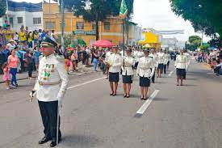
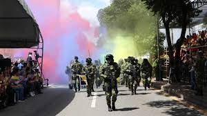
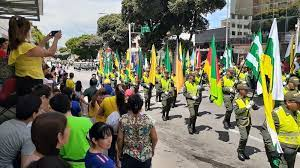
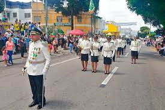
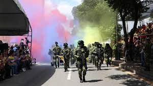
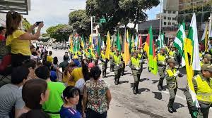

20 DE JULIO
FIESTA DE INDEPENDENCIA DE COLOMBIA
 





CUANDO SE CELEBRA ESTA FUESTA:
Esta fiesta se celebra el 20 de Julio de cada año
Si bien el 20 de julio se celebra el Día de la Independencia de Colombia, lo cierto es es que es los hechos ocurridos ese día de 1810 son parte de un proceso que empezó a gestarse a finales del siglo XVIII, con la Revolución de los Comuneros, y finalizó con la disolución de la Gran Colombia en 1830,
El Día de la Independencia se celebra en Colombia el 20 de julio de cada año. La fecha recuerda la firma del Acta de la Revolución en el año 1810, la cual significó el paso definitivo para la emancipación de Colombia del Imperio español, dando fin al periodo colonial. En el año 1873, el Congreso de Estados Unidos de Colombia declaró oficialmente el día 20 de julio de 1810 como la fecha de aniversario definitiva de la proclamación de Independencia. Esto ocurrió 63 años después de la firma oficial.
Hechos ocurridos el 20 de julio de 1810
En la mañana del 20 de julio de 1810, Luis de Rubio, patriota de la república, se dirigió de visita al negocio del comerciante español José González Llorente.
El objetivo de Luis de Rubio era pedir prestado un florero que se usaría en la cena ofrecida al comisario Antonio Villavicencio, originario de Quito. Los criollos sabían que Llorente se negaría a tal acto en favor de ellos.
Una vez Llorente se negó al préstamo del florero, los criollos, tal como lo tenían planificado desde el día anterior, manipularon la ocasión y pudieron encender los ánimos de la población en contra de los españoles. De esta manera, el florero fue la excusa para generar una revuelta contra las autoridades reinantes.
La presión popular, más todas las declaraciones de autonomía que ya se venían gestando en todo el territorio nacional, fueron el caldo de cultivo que originó, el 20 de julio de 1810, la junta de Santa Fe de Bogotá.
Esta junta estaba conformada por importantes miembros civiles e intelectuales patrióticos, quienes lograron ejecutar la firma del Acta de Independencia.
QUE TRADICIONESEXISTEN EN MI COMUNIDAD EN ESTE FESTIVOPOR QUE EXISTE ESTE FESTIVO
En mi comunidad o Barrio, este dia, se realiza la ida a las calles principales de la ciudad para observar el desfile militar, en el cual paticipan las fuerzas militares tanto de la Policia como del ejercito, y muestran su artilleria militar y tambien los perros usados, para vigilar y controlar el narcotrafico Tambien se muestran todo tipo de unifotmes utilizados en las diferentes rammas de la policia y Ejercito.
QUE HAGO EN ESTE DIA
En este dia,me alisto para ir con la familia a ver el desfile Militar, y tambien como es festivo aprovecho para hacer deporte y compartir con mi familia en un almuerzo, y posteriormente ver television